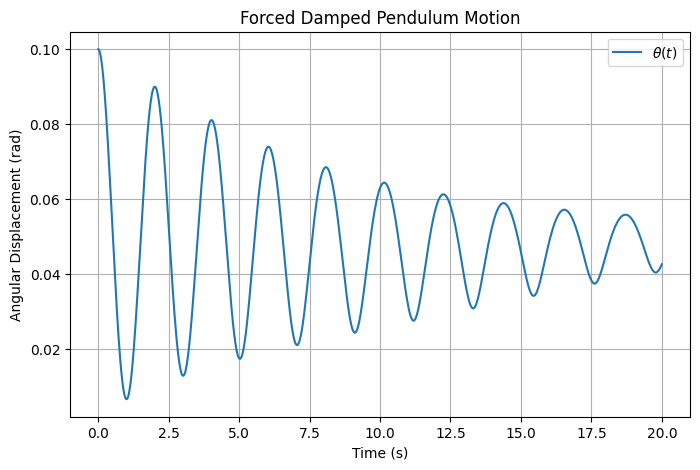
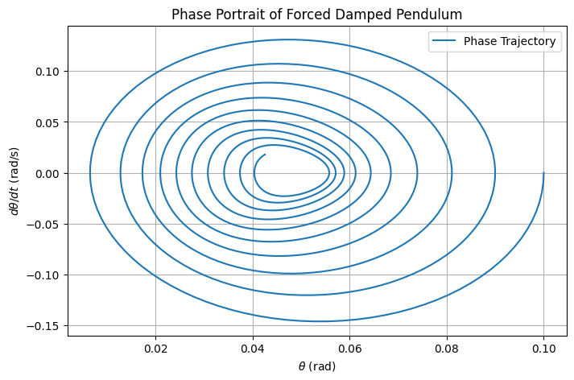

Problem 2
Forced Damped Pendulum: Dynamics and Analysis
1. Theoretical Framework
The forced damped pendulum is modeled by a second-order nonlinear ordinary differential equation (ODE) describing angular displacement under damping and periodic external forcing.
1.1 Governing Equation
The equation of motion is:
- Variables:
- \(\theta(t)\): Angular displacement (radians)
- \(b\): Damping coefficient (s\(^{-1}\))
- \(g\): Gravitational acceleration (m/s\(^2\))
- \(L\): Pendulum length (m)
- \(A\): Driving amplitude (s\(^{-2}\))
- \(\omega\): Driving frequency (rad/s)
1.2 Small-Angle Approximation
For small angles (\(\theta\ll 1\)), the nonlinear term simplifies:
This yields a linear ODE:
1.3 Solution to Linearized Equation
The solution combines homogeneous and particular components:
- Homogeneous Solution: The characteristic equation is:
\(\(r^2+br+(g/L)=0\)\)
Roots are:
\(\(r_{1,2}=(-b\pm\sqrt{b^2-4(g/L)})/2\)\)
The homogeneous solution is:
\(\(\theta_h(t)=C_1e^{r_1t}+C_2e^{r_2t}\)\)
-
For underdamped systems (\(b^2<4(g/L)\)):
\[\theta_h(t)=e^{-(b/2)t}(C_1\cos(\omega_dt)+C_2\sin(\omega_dt))\]Where damped frequency is:
\[\omega_d=\sqrt{(g/L)-(b^2/4)}\] -
Particular Solution: Assume a steady-state form:
\(\(\theta_p(t)=B\cos(\omega t-\delta)\)\)
The amplitude \(B\) is:
\(\(B=A/\sqrt{((g/L)-\omega^2)^2+(b\omega)^2}\)\)
The phase shift \(\delta\) is:
\(\(\tan\delta=(b\omega)/((g/L)-\omega^2)\)\)
#### 1.3.1 Pendulum Motion Visualization
The time evolution of \(\theta(t)\) illustrates the combined effects of damping and external forcing, as described by the nonlinear ODE:
The following Python code solves this ODE numerically using parameters \(g=9.81\) m/s\(^2\), \(L=1\) m, \(b=0.2\) s\(^{-1}\), \(A=0.5\) s\(^{-2}\), and \(\omega=0.8\sqrt{g/L}\), plotting \(\theta(t)\) over time.

```python import numpy as np import matplotlib.pyplot as plt from scipy.integrate import odeint
Parameters
g = 9.81 # m/s^2 L = 1.0 # m b = 0.2 # s^-1 A = 0.5 # s^-2 omega = 0.8 * np.sqrt(g/L)
ODE system: dtheta/dt = omega, domega/dt = -bomega - (g/L)sin(theta) + Acos(omegat)
def pendulum(state, t, b, g, L, A, omega): theta, omega = state dtheta_dt = omega domega_dt = -bomega - (g/L)np.sin(theta) + Anp.cos(omegat) return [dtheta_dt, domega_dt]
Time array
t = np.linspace(0, 20, 1000)
Initial conditions: theta(0) = 0.1 rad, dtheta/dt(0) = 0
state0 = [0.1, 0.0]
Solve ODE
solution = odeint(pendulum, state0, t, args=(b, g, L, A, omega)) theta = solution[:, 0]
Plot
plt.figure(figsize=(8, 5)) plt.plot(t, theta, label=r'\(\theta(t)\)') plt.xlabel('Time (s)') plt.ylabel('Angular Displacement (rad)') plt.title('Forced Damped Pendulum Motion') plt.grid(True) plt.legend() plt.show()
1.4 Resonance
Resonance occurs when \(\omega\) approaches the natural frequency:
- Undamped Case (\(b=0\)):
\(\(B\to\infty\text{ as }\omega\to\omega_0\)\)
- Damped Case: Maximum amplitude occurs at:
\(\(\omega_{\text{res}}=\sqrt{\omega_0^2-(b^2/2)}\)\)
With maximum amplitude:
\(\(B_{\text{max}}=A/(b\sqrt{\omega_0^2-(b^2/4)})\)\)
#### 1.4.1 Resonance Curve Visualization
The resonance curve plots the steady-state amplitude \(B\) against driving frequency \(\omega\), as given by:
The following Python code computes \(B\) for \(\omega\) from 0.1 to 5 rad/s, with \(g=9.81\) m/s\(^2\), \(L=1\) m, \(b=0.2\) s\(^{-1}\), and \(A=0.5\) s\(^{-2}\).

```python import numpy as np import matplotlib.pyplot as plt
Parameters
g = 9.81 L = 1.0 b = 0.2 A = 0.5
Frequency range
omega = np.linspace(0.1, 5, 500)
Amplitude B
B = A / np.sqrt(((g/L) - omega2)2 + (bomega)*2)
Plot
plt.figure(figsize=(8, 5)) plt.plot(omega, B, label=r'Amplitude \(B\)') plt.xlabel(r'Driving Frequency \(\omega\) (rad/s)') plt.ylabel(r'Amplitude \(B\) (rad)') plt.title('Resonance Curve of Forced Damped Pendulum') plt.grid(True) plt.legend() plt.show()
1.5 Energy Dynamics
Total mechanical energy is:
- At resonance:
- Undamped: Energy grows without bound.
-
Damped: Energy balances input and dissipation, yielding:
\[E_{\text{steady}}\approx(1/2)mL^2B^2\omega^2\]
1.6 Summary
- The nonlinear ODE governs pendulum motion.
- Small-angle approximation linearizes the system.
- Solutions include damped and forced components.
- Resonance amplifies oscillations, moderated by damping.
2. Parametric Effects
This section analyzes how parameters affect dynamics, focusing on damping, driving amplitude, and frequency.
2.1 Damping Coefficient (\(b\))
Damping influences oscillation decay:
- Low \(b\):
- Sustained oscillations.
-
Solution approximates undamped case:
\[\theta(t)\approx B\cos(\omega t-\delta)\] -
High \(b\):
- Rapid decay to equilibrium.
-
Overdamped solution (\(b^2>4(g/L)\)):
\[\theta(t)=C_1e^{r_1t}+C_2e^{r_2t}\]
2.2 Driving Amplitude (\(A\))
The amplitude \(A\) scales the external force:
- Small \(A\):
- Oscillations decay unless near resonance.
-
Amplitude scales linearly:
\[B\propto A\] -
Large \(A\):
-
Increases steady-state amplitude:
\[B=A/\sqrt{((g/L)-\omega^2)^2+(b\omega)^2}\]
2.3 Driving Frequency (\(\omega\))
Frequency determines forcing efficiency:
- Near \(\omega_0\):
- Large oscillations due to resonance.
-
Amplitude peaks at \(\omega_{\text{res}}\).
-
Far from \(\omega_0\):
-
Reduced amplitude:
\[B\approx A/|(g/L)-\omega^2|\]
2.4 Chaos and Nonlinearity
For large \(A\) or specific \(\omega\), the nonlinear \(\sin\theta\) term induces chaos:
- Periodic Motion:
-
Stable at low \(A\), described by:
\[\theta(t)\approx B\cos(\omega t-\delta)\] -
Chaotic Motion:
- Sensitive to initial conditions.
-
Characterized by positive Lyapunov exponent:
\[\lambda>0\]
2.5 Visualization Tools
- Phase Portrait:
- Plots \(\theta\) vs. \(d\theta/dt\).
- Periodic motion: Closed loops.
- Chaotic motion: Irregular patterns.
The following Python code generates a phase portrait for the pendulum with \(g=9.81\) m/s\(^2\), \(L=1\) m, \(b=0.2\) s\(^{-1}\), \(A=0.5\) s\(^{-2}\), and \(\omega=0.8\sqrt{g/L}\), showing a closed loop indicative of periodic motion.
 ```python import numpy as np import matplotlib.pyplot as plt from scipy.integrate import odeint
Parameters
g = 9.81 L = 1.0 b = 0.2 A = 0.5 omega = 0.8 * np.sqrt(g/L)
ODE system
def pendulum(state, t, b, g, L, A, omega): theta, omega = state dtheta_dt = omega domega_dt = -bomega - (g/L)np.sin(theta) + Anp.cos(omegat) return [dtheta_dt, domega_dt]
Time array
t = np.linspace(0, 20, 1000)
Initial conditions
state0 = [0.1, 0.0]
Solve ODE
solution = odeint(pendulum, state0, t, args=(b, g, L, A, omega)) theta = solution[:, 0] dtheta_dt = solution[:, 1]
Plot
plt.figure(figsize=(8, 5)) plt.plot(theta, dtheta_dt, label='Phase Trajectory') plt.xlabel(r'\(\theta\) (rad)') plt.ylabel(r'\(d\theta/dt\) (rad/s)') plt.title('Phase Portrait of Forced Damped Pendulum') plt.grid(True) plt.legend() plt.show()
- Poincaré Section:
- Samples at \(t=2\pi n/\omega\).
- Periodic: Discrete points.
- Chaotic: Scattered points.
2.6 Summary
- Damping controls oscillation decay.
- Amplitude scales forcing strength.
- Frequency drives resonance or chaos.
- Nonlinear effects lead to complex dynamics.
3. Applications
The model applies to systems with oscillatory dynamics.
3.1 Energy Harvesting
Vibrational harvesters convert motion to energy:
- Model:
- Driving force: Ambient vibrations.
-
Power output:
\[P=(1/2)mL^2(d\theta/dt)^2\] -
Optimization:
-
Maximize at resonance:
\[\omega=\omega_0\]
3.2 Structural Engineering
Bridges oscillate under external loads:
- Equation:
-
Similar to pendulum:
\[d^2\theta/dt^2+b\,d\theta/dt+(g/L)\sin\theta=F_{\text{ext}}(t)\] -
Design:
- Increase \(b\) to avoid resonance.
3.3 Electrical Circuits
RLC circuits mirror pendulum dynamics:
- Equation:
-
Charge dynamics:
\[Ld^2q/dt^2+R\,dq/dt+(1/C)q=V_{\text{ext}}(t)\] -
Resonance:
-
Maximizes current at:
\[\omega=1/\sqrt{LC}\]
3.4 Summary
- Energy harvesting optimizes power at resonance.
- Structures require damping to prevent failure.
- Circuits control resonance for stability.